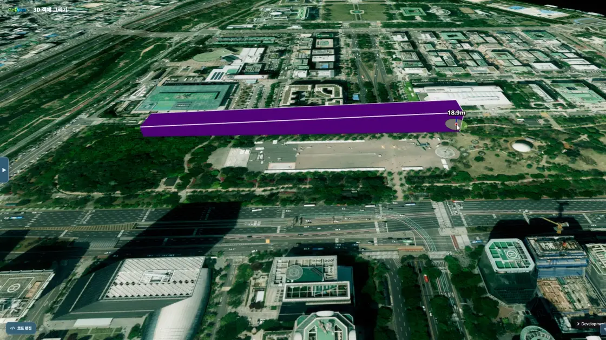

경로 (PathGeometry)
목차

U3dPathGeometry는 여러 좌표를 부드러운 곡선으로 이어, 폭과 높이를 가진 띠(리본) 형태로 세운 도형입니다.
드론 항로나 차량 이동 경로처럼 지나가는 길을 공간에 표시하는 데 사용합니다.
선(U3dLine)이 두께만 가진 데 비해, 경로는 바닥면부터 윗면까지 높이를 가진 입체입니다.
바닥 높이는 minheight, 윗면 높이는 maxheight로 정합니다.
경로를 만드는 방법은 두 가지입니다.
마우스로 화면을 클릭해 그리거나, 이미 가지고 있는 좌표 목록으로 한 번에 만듭니다.
1. 경로 생성하기
U3dPathGeometry 생성자로 객체를 만들고 U3dVectorLayer.addGeometry로 레이어에 등록합니다.
레이어를 만들고 도형을 등록·제거하는 방법은 3D Geometry 시작하기 - 도형 등록하고 제거하기에서 설명합니다.
생성자는 빈 경로 객체를 만듭니다.
좌표는 마우스로 그리기나 좌표로 경로 만들기로 넣고, 좌표가 들어온 시점에 형상이 만들어집니다.
경로 객체는 자신이 속한 레이어를 통해 앱을 찾습니다.
그리기와 편집은 앱의 마우스 이벤트를 사용하므로 레이어에 등록한 뒤에 호출합니다.
API
U3dPathGeometry(opt) : 경로 객체를 생성하는 생성자
매개변수
opt(object) : 경로 생성 옵션opt.name(string) : 객체 이름. 지정하지 않으면 자동으로 생성됩니다opt.width(number) : 경로 너비(m). 기본값:20opt.minheight(number) : 경로 바닥면의 높이(m). 기본값:0opt.maxheight(number) : 경로 윗면의 높이(m). 기본값:100opt.tension(number) : 곡선 정도(0~1). 값이 클수록 직선에 가깝습니다. 기본값:0.5opt.segments(number) : 경로를 나눌 조각 수. 작을수록 단순해집니다. 기본값:200opt.dynamicSegmentValue(number) : 경로가 길어질 때 조각 수를 늘릴 기준 길이. 기본값:100opt.outline(boolean) : 외곽선 표시 여부. 기본값:trueopt.color(ColorRepresentation) : 경로 색상opt.opacity(number) : 투명도(0~1)
1. 경로 객체 만들기
너비 30m, 바닥에서 20m 높이까지 세우는 경로를 준비합니다.
const app = new GeOnDT.U3dAPP({containername: 'map'});
const vectorLayer = new GeOnDT.vector.U3dVectorLayer({name: 'vector'});
app.addLayer(vectorLayer);
app.showLayer('vector', true);
const path = new GeOnDT.geom.U3dPathGeometry({
name: 'path_01',
width: 30, // 경로 너비 30m
minheight: 0, // 바닥면 높이
maxheight: 20, // 윗면 높이
color: '#2b448b',
opacity: 0.6
});
vectorLayer.addGeometry(path); // 등록해야 그리기와 편집이 동작합니다
2. 마우스로 그리기
draw()를 호출하면 그리기 모드가 켜집니다.
화면을 클릭할 때마다 점이 추가되고, 더블클릭하면 그리기가 끝납니다.
점을 찍는 도중 Shift를 누른 채 마우스 휠을 굴리면 다음에 추가될 점의 높이가 조절됩니다.
그리기가 끝나면 end 이벤트가 발생하며, 이벤트의 data는 경로 객체입니다.
버튼 상태를 되돌리거나 완성된 경로를 저장하는 일은 이 이벤트에서 처리합니다.
코드에서 그리기를 끝낼 때는 draw(false) 또는 endPathPoint()를 호출합니다.
API
U3dPathGeometry.draw(draw, opt) : 마우스로 경로를 그리는 모드를 켜거나 끄는 함수
매개변수
draw(boolean) :true면 그리기 시작,false면 종료. 기본값:trueopt(object) : 그릴 경로의 속성(색상·너비·높이 등). 생략하면 생성 옵션을 사용합니다
API
U3dPathGeometry.endPathPoint() : 그리기를 종료하고 경로를 확정하는 함수
API
U3dPathGeometry.addPoint(point) : 경로에 점을 하나 추가하고 다시 그리는 함수
매개변수
point(U3dMouseEvent | Vector3 | Vector3Like) : 마우스 이벤트 또는 추가할 점의 월드 좌표(EPSG:3857).{x, y, z}형태의 일반 객체도 받습니다. 필수
API
U3dPathGeometry.getMode() : 현재 동작 모드를 반환하는 함수
반환값
return(string) :'draw'(그리기),'edit'(편집),'pan'(기본) 중 하나
API
U3dPathGeometry.getDrawModeName() : 그리기 모드의 이름 문자열을 반환하는 함수
반환값
return(string) :'draw'
1. 마우스로 그리는 예제
그리기를 시작하고, 완료 시점을 end 이벤트로 받습니다.
path.once('end', function (e) {
console.log('그리기 완료', e.data.getParam());
});
path.draw(); // 클릭으로 점 추가, 더블클릭으로 완료
2. 그리는 중인지 확인하는 예제
버튼 하나로 그리기를 켜고 끌 때는 현재 모드를 확인합니다.
if (path.getMode() === path.getDrawModeName()) {
path.draw(false); // 그리는 중이면 종료
} else {
path.draw(); // 아니면 시작
}
3. 좌표로 경로 만들기
이미 좌표 목록을 가지고 있으면 마우스 없이 바로 경로를 만듭니다.createPathMesh는 월드 좌표(EPSG:3857) 배열을 받으므로, 위경도를 쓸 때는 app.getGeographicToWorld로 변환해 넘깁니다.
좌표는 두 개 이상, 옵션에는 app이 필요합니다.
조건을 만족하지 않으면 경로를 만들지 않고 undefined를 반환합니다.
API
U3dPathGeometry.createPathMesh(vertices, opt) : 좌표 목록으로 경로를 생성하는 함수
매개변수
vertices(Array<Vector3>) : 경로가 지나갈 좌표 목록 (월드 좌표, EPSG:3857). 두 개 이상 필수opt(object) : 경로 속성. 필수opt.app(U3dApp) : 좌표 변환과 지형 조회에 사용할 앱. 필수opt.width(number) : 경로 너비(m)opt.minheight(number) : 바닥면 높이(m)opt.maxheight(number) : 윗면 높이(m)opt.tension(number) : 곡선 정도(0~1)opt.segments(number) : 경로를 나눌 조각 수opt.edge(boolean) : 외곽선 표시 여부
반환값
return(U3dPathGeometry | undefined) : 생성한 경로. 좌표가 두 개 미만이거나app이 없으면undefined
API
U3dPathGeometry.updateByPoints(points) : 좌표 목록으로 경로를 다시 계산해 갱신하는 함수
매개변수
points(Array<Vector3>) : 점 좌표 목록 (월드 좌표, EPSG:3857). 필수
API
U3dApp.getGeographicToWorld(geoX, geoY, height) : 위경도 좌표를 월드 좌표로 변환하는 함수
매개변수
geoX(number) : 경도. 필수geoY(number) : 위도. 필수height(number) : 높이(m). 필수
반환값
return(WorldPosition) : 월드 좌표(EPSG:3857)
1. 위경도 목록으로 경로 만들기
위경도 세 지점을 잇는 항로를 만듭니다.
const geoPoints = [
{lon: 126.9380, lat: 37.5190, height: 60},
{lon: 126.9400, lat: 37.5205, height: 80},
{lon: 126.9425, lat: 37.5195, height: 60}
];
const vertices = geoPoints.map(function (p) {
const world = app.getGeographicToWorld(p.lon, p.lat, p.height);
return new THREE.Vector3(world.x, world.y, world.z);
});
const created = path.createPathMesh(vertices, {
app: app,
width: 30,
minheight: 0,
maxheight: 20,
tension: 0.5,
segments: 200,
edge: true
});
if (!created) {
console.warn('경로를 만들지 못했습니다. 좌표가 2개 이상인지, app을 넘겼는지 확인하세요.');
}
4. 경로 편집하기
modify()는 클릭한 지점에 편집점을 만들고 Gizmo(이동 조작기)를 붙여 경로를 수정할 수 있게 합니다.
편집을 마치면 endFunction으로 넘긴 함수가 호출됩니다.
modify가 받는 intersect는 교차 검사 결과 배열이 아니라 그중 한 항목입니다.app.intersectAtPixel이 돌려준 배열에서 첫 항목을 골라 넘깁니다.
편집점을 옮길 때 경로 형상을 갱신하는 일은 gizmoChangeEvent와 gizmoEndEvent가 맡습니다.
두 핸들러를 Gizmo 분석 기능의 onChange, end 이벤트에 연결하면 드래그하는 동안과 드래그를 마친 시점에 경로가 함께 움직입니다.
이미 만들어 둔 편집점을 다시 클릭하면 교차 대상은 경로가 아니라 편집점 구체입니다.
구체의 _path로 경로 객체를 되짚어 같은 방식으로 편집을 이어갑니다.
편집점과 Gizmo는 removeModifyHelper()로 정리합니다.
API
U3dPathGeometry.modify(intersect, endFunction) : 선택한 지점에 편집기를 띄워 경로를 편집하는 함수
매개변수
intersect(Intersection) : 클릭 지점의 교차 정보 하나.app.intersectAtPixel결과의 첫 항목을 넘깁니다. 필수endFunction(function) : 편집이 끝난 뒤 호출할 함수. 편집점 번호(number), 편집한 위치의 위경도 좌표(Vector3), 편집점 구체(Object3D)를 순서대로 받습니다
API
U3dPathGeometry.removeModifyHelper() : 편집에 사용한 Gizmo와 편집점을 제거하는 함수
1. 클릭한 경로를 편집하는 예제
지도를 클릭했을 때 경로가 선택되면 편집을 시작합니다.
const gizmo = app.getAnalysis('GizmoModel');
app.on('click', function (e) {
const intersect = app.intersectAtPixel(e, false, true);
if (!intersect || !intersect[0]) return;
let target = intersect[0].object;
if (!target.modify && target._path) target = target._path; // 편집점을 클릭하면 경로로 되짚습니다
if (!target.modify) return; // 경로가 아니면 무시
if (target.getMode() === target.getDrawModeName()) return; // 그리는 중이면 무시
gizmo.setMode('translate');
gizmo.on('onChange', target.gizmoChangeEvent.bind(target)); // 드래그 중 갱신
gizmo.on('end', target.gizmoEndEvent.bind(target)); // 드래그 완료
target.modify(intersect[0], function (index, geoPosition) { // 배열의 첫 항목
console.log('편집 완료', index, geoPosition);
});
});
2. 편집을 끝내고 정리하는 예제
편집을 마친 뒤 편집점과 Gizmo를 제거합니다.
path.removeModifyHelper();
5. 속성 바꾸기
색상과 투명도는 호출 즉시 반영됩니다.
너비·높이·곡선 정도·세분화·외곽선은 경로를 다시 만들어 반영하므로 좌표가 이미 들어 있는 경로에 적용됩니다.
좌표가 두 개 미만이거나 앱 정보가 없으면 형태 값 변경은 건너뜁니다.
API
U3dPathGeometry.setParam(param) : 경로 속성을 한 번에 변경하는 함수
매개변수
param(object) : 변경할 속성 객체. 생략한 속성은 현재 값을 유지합니다param.color(ColorRepresentation) : 경로 색상param.opacity(number) : 투명도(0~1)param.width(number) : 경로 너비(m)param.minheight(number) : 바닥면 높이(m)param.maxheight(number) : 윗면 높이(m)param.tension(number) : 곡선 정도(0~1)param.segments(number) : 경로를 나눌 조각 수param.outline(boolean) : 외곽선 표시 여부
API
U3dPathGeometry.getParam() : 경로의 현재 속성을 반환하는 함수
반환값
return(U3dPathGeometryParam) :width,tension,segments,minheight,maxheight,outline과 도형 공통 속성
API
U3dPathGeometry.setColor(color) : 경로 색상을 설정하는 함수
매개변수
color(ColorRepresentation) : 색상. 16진수 숫자(0xff0000), CSS 색 문자열('#ff0000') 또는THREE.Color. 필수
API
U3dPathGeometry.setOpacity(value) : 경로 투명도를 설정하는 함수
매개변수
value(number) : 투명도(0~1). 0이면 완전 투명, 1이면 불투명. 필수
API
U3dPathGeometry.setDynamicSegmentValue(value) : 경로가 길어질 때 조각 수를 늘릴 기준 길이를 설정하는 함수
매개변수
value(number) : 기준 길이. 값이 작을수록 더 촘촘하게 분할됩니다. 필수
1. 색과 형태를 바꾸는 예제
path.setParam({
color: '#ff3b30', // 즉시 반영
opacity: 0.5, // 즉시 반영
width: 40, // 경로를 다시 만들어 반영
maxheight: 35
});
console.log(path.getParam().width); // 40
6. 저장하고 불러오기
export()는 경로를 다시 만드는 데 필요한 속성과 좌표를 함께 돌려줍니다.
그 값을 그대로 import()에 넣으면 같은 경로가 복원됩니다.
import는 레이어를 통해 앱을 찾으므로 레이어에 등록한 경로 객체에서 호출합니다.
좌표는 저장할 때와 같은 월드 좌표(EPSG:3857)를 그대로 사용합니다.
경로는 곡선을 계산할 때 좌표 사이의 거리를 구합니다.
JSON으로 저장했다가 불러온 좌표는 THREE.Vector3로 되돌린 뒤 넘깁니다.
경로를 더 이상 쓰지 않으면 dispose()로 정리합니다.
편집용 임시 객체와 등록해 둔 마우스 이벤트까지 함께 해제됩니다.
API
U3dPathGeometry.export() : 경로를 복원하는 데 필요한 속성과 좌표를 반환하는 함수
반환값
return(object) : 경로 정보return.pathOption(object) : 색상·너비·높이·곡선 정도·외곽선 등 경로 속성return.coordinates(Array<Vector3>) : 경로 좌표 목록 (월드 좌표, EPSG:3857)
API
U3dPathGeometry.import(opt) : 저장한 속성과 좌표로 경로를 복원하는 함수
매개변수
opt(object) :export가 반환한 객체. 필수opt.pathOption(object) : 경로 속성. 없으면 아무 일도 하지 않습니다opt.coordinates(Array<Vector3>) : 경로 좌표 목록 (월드 좌표, EPSG:3857). 필수
반환값
return(U3dPathGeometry | undefined) : 복원한 경로.pathOption이 없거나 레이어에 등록하지 않았으면undefined
API
U3dPathGeometry.dispose() : 경로와 편집용 임시 객체·이벤트를 정리하고 자원을 해제하는 함수
1. 저장하고 복원하는 예제
const saved = path.export();
localStorage.setItem('pathWork', JSON.stringify(saved));
복원할 때는 새 경로 객체를 레이어에 등록한 뒤 불러옵니다.
const raw = localStorage.getItem('pathWork');
if (raw) {
const saved = JSON.parse(raw);
// JSON에서 되살린 좌표는 일반 객체이므로 Vector3로 변환합니다
saved.coordinates = saved.coordinates.map(function (c) {
return new THREE.Vector3(c.x, c.y, c.z);
});
const restored = new GeOnDT.geom.U3dPathGeometry();
vectorLayer.addGeometry(restored); // 등록 후에 import 합니다
restored.import(saved);
}
2. 정리 예제
vectorLayer.removeGeometry(path);
path.dispose();